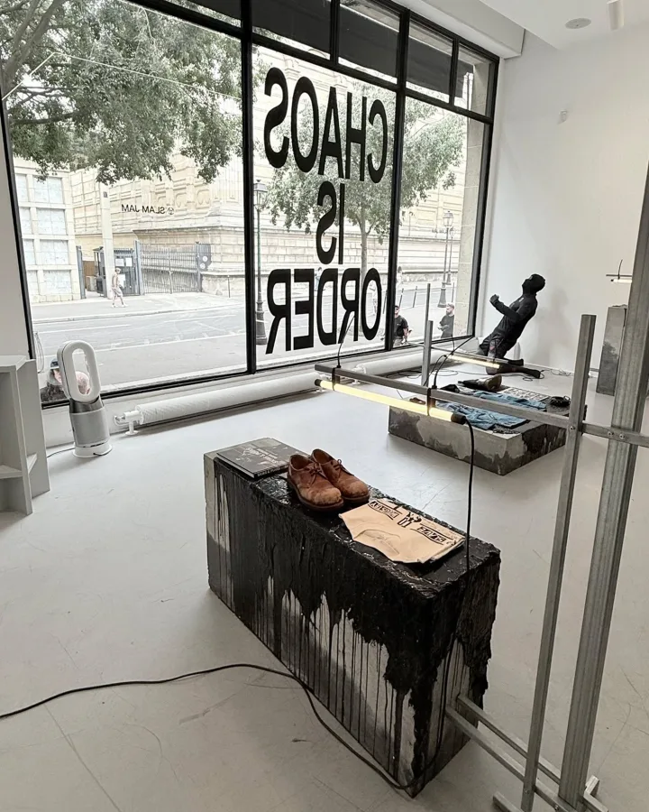
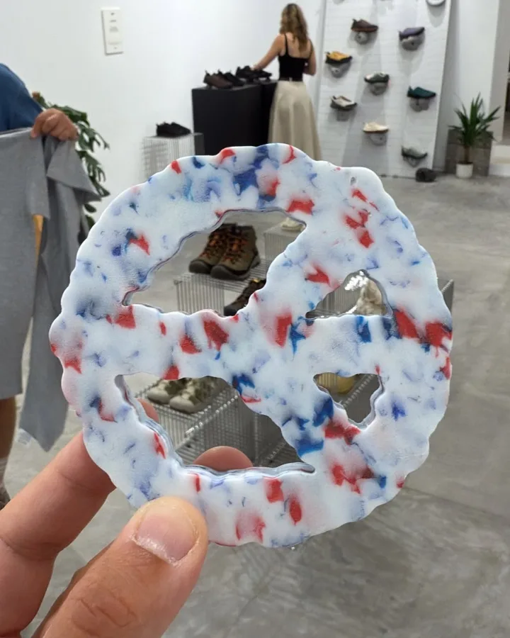
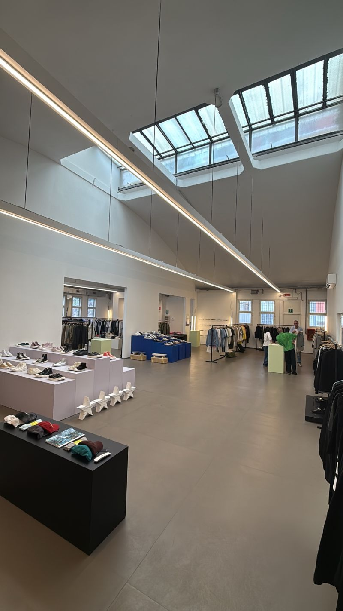
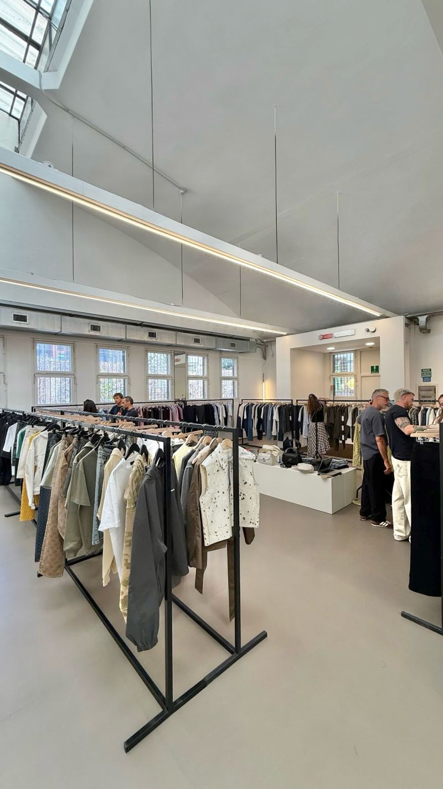
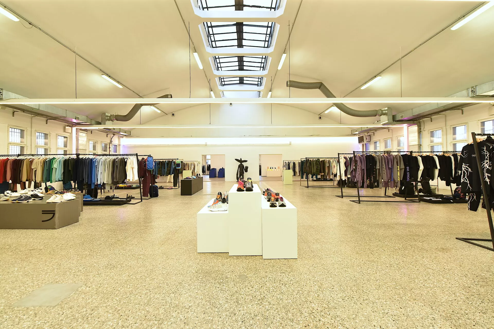
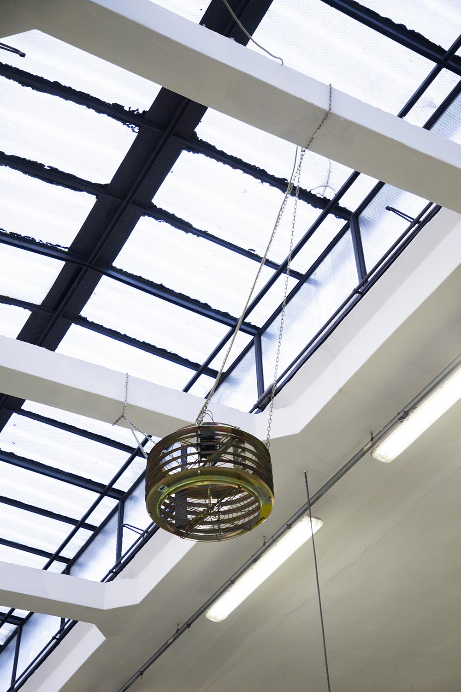

Sept is an independent multibrand showroom founded in 2020 in Milan.
It comes from a strong knowledge and passion for street culture expressed in all known forms as music, art, of course fashion, sport and its newest expressions.
It translates into a natural propensity towards the world of fashion by taking inspiration from all the stimulating things that surround us.
Our showroom follows his direction while remaining faithful to his identity, in an increasingly complex and difficult market, making the quality of service to customers and brands his first mission.





A BATHING APE ACUPUNCTURE 1993 ALPHA INDUSTRIES AMISH SUPPLIES ARIES ARTE ANTWERP CHAMPION PINNACLE CIELE ATHLETICS COOKMAN COTOPAXI CROCS EXP DAILY PAPER EVISU GR10K HIKING PATROL KAPPY KEEN LEE 101 LEVI'S MONO NEW AMSTERDAM SURF ASSOCIATION NO PROBLEMO NORDA NORTHWAVE ESPRESSO PEACEMAKER OAMC PRESIDENT'S PURAAI PYRENEX REEBOK REPLICATED GR10K RHIZOME SAMSØE SAMSØE SANTHA SATISFY SESSÙN TEVA THE SKATEROOM WRANGLER XLARGE




Opificio Tajani is a multifuncional space located in the metropolitan area of Milan that can host events, exhibitions and samples sales.
It's divided into two rooms: the main one of about 750 sqm and the second one of about 250 sqm. This allows to create two different but at the same time continuous environments.
We are open for appointments from 10 am to 5 pm from Monday to Friday.
For collaboration please email: hello@sept-showroom.com


2020-26
Via Filippo Tajani 1
20133
Milano
.sept